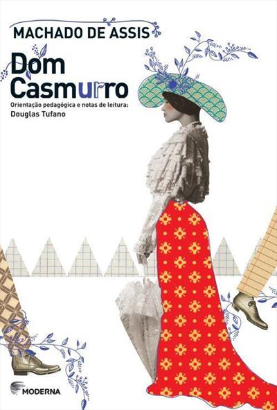

Em Dom Casmurro, o narrador Bento Santiago retoma a infância que passou na Rua de Matacavalos e conta a história do amor e das desventuras que viveu com Capitu, uma das personagens mais enigmáticas e intrigantes da literatura brasileira. Nas páginas deste romance, encontra-se a versão de um homem perturbado pelo ciúme, que revela aos poucos sua psicologia complexa e enreda o leitor em sua narrativa ambígua acerca do acontecimento ou não do adultério da mulher com olhos de ressaca, uma das maiores polêmicas da literatura brasileira.